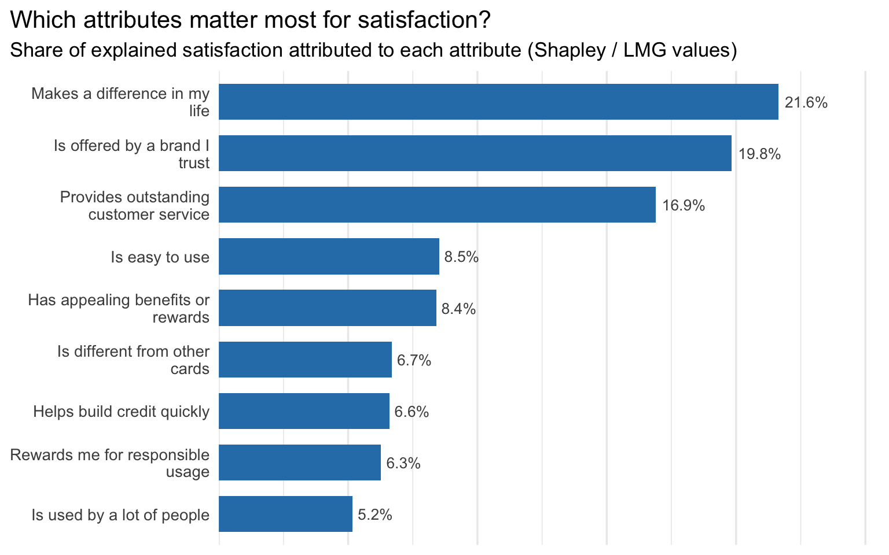

In the key drivers lecture, we spent a lot of time on one deceptively simple question: when a client says “tell me what drives customer satisfaction,” what do they actually want? Almost always, the honest answer is “a ranked list of variables, with some number attached to each one that tells me how much it matters relative to the others.” The tricky part is that there isn’t one single “correct” way to produce that number — there are at least half a dozen reasonable ones, and they don’t always agree with each other.
This post replicates the credit card example from the key drivers slides (slide 75), using a customer satisfaction survey dataset. Each respondent rated their overall satisfaction with a credit card brand on a 1-5 scale, and also answered yes/no (1/0) to nine statements describing their perception of that brand. The nine perception statements are:
Is offered by a brand I trust (trust)
Helps build credit quickly (build)
Is different from other cards (differs)
Is easy to use (easy)
Has appealing benefits or rewards (appealing)
Rewards me for responsible usage (rewarding)
Is used by a lot of people (popular)
Provides outstanding customer service (service)
Makes a difference in my life (impact)
The goal is to figure out, for each of these nine attributes, how “important” it is in explaining overall satisfaction — using six different methods: Pearson correlations, standardized regression coefficients, usefulness (drop-one R²), Shapley values (LMG), Johnson’s relative weights (epsilon), and the mean decrease in Gini from a random forest.
Let’s load everything up.
Code
# install anything that's missing before loadingrequired_pkgs <-c("tidyverse", "randomForest", "knitr")missing_pkgs <- required_pkgs[!sapply(required_pkgs, requireNamespace, quietly =TRUE)]if (length(missing_pkgs) >0) install.packages(missing_pkgs)library(tidyverse)library(randomForest)library(knitr)df <-read_csv("data_for_drivers_analysis.csv")# the nine perception attributes we're scoringdrivers <-c("trust", "build", "differs", "easy", "appealing","rewarding", "popular", "service", "impact")# human-readable labels, matching the wording on slide 75driver_labels <-c(trust ="Is offered by a brand I trust",build ="Helps build credit quickly",differs ="Is different from other cards",easy ="Is easy to use",appealing ="Has appealing benefits or rewards",rewarding ="Rewards me for responsible usage",popular ="Is used by a lot of people",service ="Provides outstanding customer service",impact ="Makes a difference in my life")glimpse(df)
A quick note on the data: satisfaction is the response we care about (1-5), and the nine attributes are all binary — each respondent either agreed with the statement (1) or didn’t (0). There’s also a brand column (10 different credit card brands are represented) and an id column, but neither of those enters the driver analysis directly.
A quick look at the relationships
Before jumping into six different importance metrics, it’s worth understanding why we need six different importance metrics in the first place. If the nine attributes were all uncorrelated with each other, this whole exercise would be much less interesting — every method below would basically agree, because there’d be no ambiguity about how to split “credit” for explaining satisfaction.
That’s not the case here. Let’s check the correlation matrix among the nine attributes themselves.
Every pair of attributes is positively correlated, with most pairwise correlations sitting somewhere between 0.3 and 0.5. In other words, a respondent who agrees that the brand “is easy to use” is also more likely to agree that it “has appealing benefits” or “provides outstanding customer service.” This is extremely common in perception data — people who feel generally positive about a brand tend to check more boxes, full stop.
This is exactly the situation where the choice of importance metric starts to matter. Methods that look at each variable in isolation (like simple Pearson correlations) will tend to “double count” the shared variance. Methods that look at each variable’s marginal contribution after accounting for the others (like usefulness) will tend to under-count it, especially for variables that are highly correlated with the others. Shapley-based methods are designed to split the difference in a principled way. Keeping this in mind will help make sense of why the six columns in our final table don’t all tell exactly the same story.
Method 1: Pearson correlations
The simplest possible approach: for each attribute, just compute its raw correlation with satisfaction. This is equivalent to the R² from a simple (one-variable) regression of satisfaction on that attribute — fast, intuitive, and the sign is always “correct” (a positive correlation means the attribute is associated with higher satisfaction).
The catch, as the lecture pointed out, is that when the X variables are correlated with each other (which we just confirmed they are), the sum of these individual relationships double-counts shared variance. To make the numbers comparable to the other five methods — and to match the format used on slide 75 — we report each attribute’s correlation as a share of the total, i.e., we normalize the (absolute) correlations so they sum to 100%.
trust build differs easy appealing rewarding popular service
13.3 10.0 9.6 11.1 10.8 10.1 8.9 13.0
impact
13.2
Method 2: Standardized regression coefficients
The next step up in sophistication: run a single multiple regression of satisfaction on all nine attributes simultaneously, after standardizing everything (mean 0, standard deviation 1). Because all variables are on the same scale after standardization, the resulting coefficients are directly comparable to each other — a bigger absolute coefficient means a bigger “effect” on satisfaction, in standard-deviation units.
This is a single regression, so it’s cheap to compute. The downside, again per the lecture, is that when predictors are correlated, standardized coefficients tend to under-state the importance of variables that share variance with others — the regression effectively “gives credit” to whichever variable happens to soak up the shared signal first.
trust build differs easy appealing rewarding popular service
25.3 4.4 6.1 4.8 7.4 1.1 3.6 19.3
impact
28.0
Method 3: Usefulness (drop-one R²)
“Usefulness” asks a very direct question for each attribute: how much does the model’s R² drop if we remove this one variable and re-fit with the other eight? That drop in R² is the variable’s unique contribution — the portion of variance it explains that none of the other eight attributes can explain on their own.
This requires fitting K+1 = 10 regressions total (the full model, plus one model for each of the nine “leave-one-out” versions), which is still very cheap. As with standardized coefficients, this measure tends to understate the importance of variables that are highly correlated with others, because their “unique” contribution shrinks once the other correlated variables are already in the model.
trust build differs easy appealing rewarding popular service
31.5 1.0 2.1 1.1 2.7 0.1 0.8 17.9
impact
42.8
A useful sanity check: r2_full is the R² of the full nine-variable model.
Code
round(r2_full, 4)
[1] 0.109
It’s not a huge number — about 10.9% of the variation in satisfaction is explained by these nine yes/no perception items. That’s normal for survey data like this; satisfaction is driven by a lot of things we didn’t measure (price, personal financial situation, recent customer service interactions, etc.). What we can say, regardless of how small R² is, is how that explained variance is split up among the nine attributes — which is exactly what this whole exercise is about.
Method 4: Shapley values (LMG)
This is where things get more interesting. The Shapley value approach (also called LMG, after Lindeman, Merenda and Gold) asks: across every possible order in which you could add the nine variables into the model one at a time, what is each variable’s average marginal contribution to R²?
Concretely, for a given variable, we look at every possible subset of the other eight variables, compute the model’s R² with and without our variable of interest added to that subset, and take the difference. Then we average those differences across all subsets — weighting by how many subsets of each size there are — to get the Shapley value. Unlike usefulness (which only looks at the “all other variables already in” case) or simple correlations (which only look at the “no other variables in” case), Shapley values average over every possible context. This is what makes them a fair way to split credit when variables are correlated: each variable gets credit for its contribution averaged across all the company it could keep.
The catch is computational cost — for \(p\) variables there are \(2^p\) possible subsets, so this gets expensive quickly. With \(p=9\) we have \(2^9 = 512\) regressions, which is very manageable. The lecture mentioned this approach tends to max out around 15-20 variables for linear regression, and we’re well under that.
Building it from scratch
Since this is explicitly listed as a medium-challenge bonus in the assignment, and because I think it’s the best way to actually understand what Shapley values are doing, here’s a from-scratch implementation. For a given variable \(j\), and writing \(N \setminus \{j\}\) for the set of the other eight variables, the Shapley value is:
where \(R^2(S)\) is the R² of a regression of satisfaction on whatever variables are in subset \(S\) (and \(R^2(\emptyset) = 0\)). The weight in front is just the Shapley weighting scheme: it’s the probability that, if you randomly ordered all \(p\) variables, the variables before \(j\) would be exactly the set \(S\).
Code
shapley_r2 <-function(data, response, vars) { p <-length(vars)# helper: R^2 of a regression on a given subset of variables (empty subset -> 0) r2_subset <-function(subset_vars) {if (length(subset_vars) ==0) return(0) f <-as.formula(paste(response, "~", paste(subset_vars, collapse =" + ")))summary(lm(f, data = data))$r.squared } shap <-setNames(numeric(p), vars)for (j in vars) { others <-setdiff(vars, j) total <-0for (k in0:length(others)) { subsets <-if (k ==0) list(character(0)) elsecombn(others, k, simplify =FALSE) weight <-factorial(k) *factorial(p - k -1) /factorial(p)for (S in subsets) { total <- total + weight * (r2_subset(c(S, j)) -r2_subset(S)) } } shap[j] <- total } shap}shap_raw <-shapley_r2(df, "satisfaction", drivers)shap_pct <- shap_raw /sum(shap_raw) *100round(shap_pct, 1)
trust build differs easy appealing rewarding popular service
19.8 6.6 6.7 8.5 8.4 6.3 5.2 16.9
impact
21.6
As a sanity check, two properties should hold if this is implemented correctly: the Shapley values should all be non-negative (unlike, say, drop-one usefulness, which can in principle go negative for suppressor variables), and they should sum exactly to the full model’s R² before normalization.
Code
all(shap_raw >=0)
[1] TRUE
Code
round(sum(shap_raw) - r2_full, 8)
[1] 0
Both check out — every attribute gets a non-negative share of credit, and those shares add up to exactly the R² we computed back in Method 3. That’s the “efficiency” property of Shapley values: nothing is left over, and nothing is double-counted.
Method 5: Johnson’s relative weights (epsilon)
Shapley values are great, but \(2^9\) regressions is already a lot more work than the one or ten regressions the earlier methods needed, and that cost grows exponentially. Johnson’s (2000) “relative weights” — sometimes written as epsilon — is a clever algebraic shortcut that approximates Shapley values for linear regression using nothing but matrix algebra on the correlation matrix. No re-fitting the model dozens of times; it’s basically instantaneous regardless of how many predictors you have.
The intuition: take the (standardized) predictors \(X\) and find an orthogonal transformation of them, \(Z = X \Delta^{-1}\), where \(\Delta = R_{XX}^{1/2}\) is the symmetric square root of the predictor correlation matrix \(R_{XX}\). By construction, the \(Z\) variables are uncorrelated with each other, so regressing \(Y\) on \(Z\) gives standardized coefficients that are simply the correlations between each \(Z_k\) and \(Y\) — and because the \(Z\)’s are orthogonal, \(R^2 = \sum_k \beta_{z_k}^2\) with no overlap to worry about.
The remaining piece is how to translate that cleanly-partitioned \(R^2\) back onto the original variables \(X_1, \dots, X_9\). It turns out that the correlation between \(X_j\) and \(Z_k\) is exactly \(\Delta_{jk}\) (an element of that same square-root matrix), and — conveniently — \(\sum_j \Delta_{jk}^2 = 1\) for every \(k\). So we can split each orthogonal component’s contribution \(\beta_{z_k}^2\) across the original variables in proportion to \(\Delta_{jk}^2\), and everything adds up correctly:
johnsons_epsilon <-function(data, response, vars) { X <-scale(as.matrix(data[, vars])) y <-as.numeric(scale(data[[response]])) Rxx <-cor(X) Rxy <-as.vector(cor(X, y)) eig <-eigen(Rxx) V <- eig$vectors ev <- eig$values Delta <- V %*%diag(sqrt(ev)) %*%t(V) # Rxx^(1/2) Delta_inv <- V %*%diag(1/sqrt(ev)) %*%t(V) # Rxx^(-1/2) beta_z <- Delta_inv %*% Rxy epsilon <-as.vector((Delta^2) %*% (beta_z^2))names(epsilon) <- vars epsilon}epsilon_raw <-johnsons_epsilon(df, "satisfaction", drivers)epsilon_pct <- epsilon_raw /sum(epsilon_raw) *100round(epsilon_pct, 1)
trust build differs easy appealing rewarding popular service
19.8 6.6 7.0 8.2 8.3 6.0 5.4 16.6
impact
22.0
Notice how close these numbers are to the Shapley values from Method 4 — that’s the whole point of Johnson’s approach. It’s an approximation that, in practice, tends to land within a percentage point or two of the “true” Shapley/LMG values, at a fraction of the computational cost.
Method 6: Random forest — mean decrease in Gini
The first five methods are all variations on linear regression. The last method steps outside that world entirely. A random forest builds hundreds of decision trees, each on a bootstrapped sample of the data and a random subset of the predictors, and averages their predictions. Every time a tree splits on a variable, that split reduces the impurity of the resulting groups (measured by the Gini index, for a classification tree). Summing up — across every tree, and every split — how much each variable reduces impurity gives us the “mean decrease in Gini,” a measure of variable importance that comes essentially for free as a byproduct of fitting the forest.
Because satisfaction is an ordinal 1-5 rating rather than a continuous number, I’m treating it as a categorical outcome and fitting a classification forest (this is also what makes the Gini-based importance measure — rather than the regression analogue based on node purity / %IncMSE — the natural one to report here).
trust build differs easy appealing rewarding popular service
11.2 11.0 10.7 10.9 10.9 11.1 11.5 10.8
impact
11.9
One thing worth flagging up front: random forests pick up on nonlinearities and interactions that the five regression-based methods above simply can’t see. So it wouldn’t be shocking if the ranking from this method looks noticeably different from the others — and as we’ll see in a moment, it does.
Putting it all together
Now let’s assemble everything into a single table, in the same format as slide 75 — one row per attribute, one column per method, each column normalized to sum to 100%.
Six columns of percentages is a lot to absorb at once, so here’s the same information condensed into a single ranking — using the Shapley values as the headline number, since that’s the method the rest of this post has been building toward.
Code
results |>mutate(Attribute =str_wrap(Attribute, width =28)) |>mutate(Attribute =fct_reorder(Attribute, `LMG / Shapley`)) |>ggplot(aes(x =`LMG / Shapley`, y = Attribute)) +geom_col(fill ="#2c7fb8", width =0.7) +geom_text(aes(label =paste0(round(`LMG / Shapley`, 1), "%")),hjust =-0.15, size =3.5, color ="grey30") +scale_x_continuous(expand =expansion(mult =c(0, 0.18))) +labs(title ="Which attributes matter most for satisfaction?",subtitle ="Share of explained satisfaction attributed to each attribute (Shapley / LMG values)",x =NULL, y =NULL ) +theme_minimal(base_size =13) +theme(panel.grid.major.y =element_blank(),axis.text.x =element_blank(),plot.title.position ="plot" )

Relative importance of each attribute, based on Shapley (LMG) values
So, what actually drives satisfaction?
A few patterns jump out once everything is lined up side by side.
“Trust,” “service,” and “impact” dominate the regression-based methods. Across Pearson correlations, standardized coefficients, usefulness, Shapley values, and Johnson’s epsilon, the same three attributes — is offered by a brand I trust, provides outstanding customer service, and makes a difference in my life — consistently come out on top, typically accounting for somewhere around half of the total explained variance between just the three of them. The other six attributes (build, differs, easy, appealing, rewarding, popular) all sit in a fairly tight, much lower band.
The methods agree more than I expected, given how different their logic is. Pearson correlations and standardized coefficients are the “extremes” — simple correlation tends to spread credit out a bit more evenly (because it ignores the overlap between variables), while standardized coefficients and usefulness concentrate credit more sharply on “trust” and “impact” (because they’re measuring what’s left over after accounting for the other, correlated attributes). Shapley values and Johnson’s epsilon land in between, which is exactly what the theory predicts — they’re explicitly designed to average across both extremes.
The random forest tells a different story. The Gini-based importances from the random forest are much flatter than the regression-based ones, and the ranking shifts too — attributes like “rewarding” and “popular,” which were near the bottom of every regression-based ranking, move up noticeably, while “trust” and “impact” lose some of their dominance. My read on this is that the binary perception attributes don’t have a lot of room to express nonlinear effects on their own (they’re 0/1, after all), so a lot of what the random forest is picking up is probably interactions between attributes — e.g., maybe “rewarding” matters a lot more for satisfaction specifically when “trust” is also present, in a way that a linear model’s main effects can’t capture but a tree’s sequential splits can. It’s also a useful reminder that “variable importance” isn’t a single well-defined quantity — it’s a function of both the data and the model you chose to fit, and a sensible analyst reports more than one.
Wrapping up
If I were handing this table to the credit card brand’s marketing team, I’d lead with the regression-based consensus: trust, customer service, and “makes a difference in my life” are the three attributes most strongly tied to overall satisfaction, and they’re worth disproportionate investment relative to things like rewards programs or being “different from other cards.” But I’d also flag the random forest result as a reason to dig a bit further — if there really are interaction effects between attributes like “trust” and “rewarding,” that’s an actionable finding in its own right (it might mean a rewards program is most effective when it’s bundled with messaging that reinforces brand trust, for instance), and it’s exactly the kind of pattern that a single-method analysis would have missed entirely.
That, ultimately, is the case for running more than one key-drivers method even when it feels redundant: each one is answering a slightly different question, and the gaps between their answers are often as informative as the answers themselves.
Source Code
---title: "Key Drivers Analysis: What Actually Moves Credit Card Satisfaction?"author: "Mengyao (Mia) Ma"date: todayformat: html: toc: true toc-depth: 2 code-fold: show code-tools: true df-print: kableexecute: warning: false message: false---## Setting up the problemIn the key drivers lecture, we spent a lot of time on one deceptively simple question: when a client says "tell me what drives customer satisfaction," what do they actually want? Almost always, the honest answer is "a ranked list of variables, with some number attached to each one that tells me how much it matters relative to the others." The tricky part is that there isn't one single "correct" way to produce that number — there are at least half a dozen reasonable ones, and they don't always agree with each other.This post replicates the credit card example from the key drivers slides (slide 75), using a customer satisfaction survey dataset. Each respondent rated their overall satisfaction with a credit card brand on a 1-5 scale, and also answered yes/no (1/0) to nine statements describing their perception of that brand. The nine perception statements are:1. Is offered by a brand I trust (`trust`)2. Helps build credit quickly (`build`)3. Is different from other cards (`differs`)4. Is easy to use (`easy`)5. Has appealing benefits or rewards (`appealing`)6. Rewards me for responsible usage (`rewarding`)7. Is used by a lot of people (`popular`)8. Provides outstanding customer service (`service`)9. Makes a difference in my life (`impact`)The goal is to figure out, for each of these nine attributes, how "important" it is in explaining overall satisfaction — using six different methods: Pearson correlations, standardized regression coefficients, usefulness (drop-one R²), Shapley values (LMG), Johnson's relative weights (epsilon), and the mean decrease in Gini from a random forest.Let's load everything up.```{r}#| label: setup# install anything that's missing before loadingrequired_pkgs <-c("tidyverse", "randomForest", "knitr")missing_pkgs <- required_pkgs[!sapply(required_pkgs, requireNamespace, quietly =TRUE)]if (length(missing_pkgs) >0) install.packages(missing_pkgs)library(tidyverse)library(randomForest)library(knitr)df <-read_csv("data_for_drivers_analysis.csv")# the nine perception attributes we're scoringdrivers <-c("trust", "build", "differs", "easy", "appealing","rewarding", "popular", "service", "impact")# human-readable labels, matching the wording on slide 75driver_labels <-c(trust ="Is offered by a brand I trust",build ="Helps build credit quickly",differs ="Is different from other cards",easy ="Is easy to use",appealing ="Has appealing benefits or rewards",rewarding ="Rewards me for responsible usage",popular ="Is used by a lot of people",service ="Provides outstanding customer service",impact ="Makes a difference in my life")glimpse(df)```A quick note on the data: `satisfaction` is the response we care about (1-5), and the nine attributes are all binary — each respondent either agreed with the statement (1) or didn't (0). There's also a `brand` column (10 different credit card brands are represented) and an `id` column, but neither of those enters the driver analysis directly.## A quick look at the relationshipsBefore jumping into six different importance metrics, it's worth understanding *why* we need six different importance metrics in the first place. If the nine attributes were all uncorrelated with each other, this whole exercise would be much less interesting — every method below would basically agree, because there'd be no ambiguity about how to split "credit" for explaining satisfaction.That's not the case here. Let's check the correlation matrix among the nine attributes themselves.```{r}#| label: driver-correlationsdriver_corr <-cor(df[, drivers])round(driver_corr, 2)```Every pair of attributes is positively correlated, with most pairwise correlations sitting somewhere between 0.3 and 0.5. In other words, a respondent who agrees that the brand "is easy to use" is also more likely to agree that it "has appealing benefits" or "provides outstanding customer service." This is extremely common in perception data — people who feel generally positive about a brand tend to check more boxes, full stop.This is exactly the situation where the choice of importance metric starts to matter. Methods that look at each variable in isolation (like simple Pearson correlations) will tend to "double count" the shared variance. Methods that look at each variable's *marginal* contribution after accounting for the others (like usefulness) will tend to *under*-count it, especially for variables that are highly correlated with the others. Shapley-based methods are designed to split the difference in a principled way. Keeping this in mind will help make sense of why the six columns in our final table don't all tell exactly the same story.## Method 1: Pearson correlationsThe simplest possible approach: for each attribute, just compute its raw correlation with satisfaction. This is equivalent to the R² from a simple (one-variable) regression of satisfaction on that attribute — fast, intuitive, and the sign is always "correct" (a positive correlation means the attribute is associated with higher satisfaction).The catch, as the lecture pointed out, is that when the X variables are correlated with each other (which we just confirmed they are), the *sum* of these individual relationships double-counts shared variance. To make the numbers comparable to the other five methods — and to match the format used on slide 75 — we report each attribute's correlation as a share of the total, i.e., we normalize the (absolute) correlations so they sum to 100%.```{r}#| label: pearsonpearson_r <-sapply(drivers, function(v) cor(df[[v]], df$satisfaction))pearson_pct <-abs(pearson_r) /sum(abs(pearson_r)) *100round(pearson_pct, 1)```## Method 2: Standardized regression coefficientsThe next step up in sophistication: run a single multiple regression of satisfaction on all nine attributes simultaneously, after standardizing everything (mean 0, standard deviation 1). Because all variables are on the same scale after standardization, the resulting coefficients are directly comparable to each other — a bigger absolute coefficient means a bigger "effect" on satisfaction, in standard-deviation units.This is a single regression, so it's cheap to compute. The downside, again per the lecture, is that when predictors are correlated, standardized coefficients tend to *under*-state the importance of variables that share variance with others — the regression effectively "gives credit" to whichever variable happens to soak up the shared signal first.```{r}#| label: standardized-coefsdf_std <- df |>mutate(across(c(satisfaction, all_of(drivers)), ~as.numeric(scale(.))))lm_std <-lm(satisfaction ~ trust + build + differs + easy + appealing + rewarding + popular + service + impact,data = df_std)beta_std <-coef(lm_std)[drivers]beta_pct <-abs(beta_std) /sum(abs(beta_std)) *100round(beta_pct, 1)```## Method 3: Usefulness (drop-one R²)"Usefulness" asks a very direct question for each attribute: how much does the model's R² drop if we remove this one variable and re-fit with the other eight? That drop in R² is the variable's *unique* contribution — the portion of variance it explains that none of the other eight attributes can explain on their own.This requires fitting K+1 = 10 regressions total (the full model, plus one model for each of the nine "leave-one-out" versions), which is still very cheap. As with standardized coefficients, this measure tends to understate the importance of variables that are highly correlated with others, because their "unique" contribution shrinks once the other correlated variables are already in the model.```{r}#| label: usefulnessfull_formula <-as.formula(paste("satisfaction ~", paste(drivers, collapse =" + ")))full_model <-lm(full_formula, data = df)r2_full <-summary(full_model)$r.squaredusefulness <-sapply(drivers, function(v) { reduced_vars <-setdiff(drivers, v) reduced_formula <-as.formula(paste("satisfaction ~", paste(reduced_vars, collapse =" + "))) r2_reduced <-summary(lm(reduced_formula, data = df))$r.squared r2_full - r2_reduced})usefulness_pct <- usefulness /sum(usefulness) *100round(usefulness_pct, 1)```A useful sanity check: `r2_full` is the R² of the full nine-variable model.```{r}#| label: r2-fullround(r2_full, 4)```It's not a huge number — about `r round(r2_full*100,1)`% of the variation in satisfaction is explained by these nine yes/no perception items. That's normal for survey data like this; satisfaction is driven by a lot of things we didn't measure (price, personal financial situation, recent customer service interactions, etc.). What we *can* say, regardless of how small R² is, is how that explained variance is split up among the nine attributes — which is exactly what this whole exercise is about.## Method 4: Shapley values (LMG)This is where things get more interesting. The Shapley value approach (also called LMG, after Lindeman, Merenda and Gold) asks: across *every possible order* in which you could add the nine variables into the model one at a time, what is each variable's *average* marginal contribution to R²?Concretely, for a given variable, we look at every possible subset of the *other* eight variables, compute the model's R² with and without our variable of interest added to that subset, and take the difference. Then we average those differences across all subsets — weighting by how many subsets of each size there are — to get the Shapley value. Unlike usefulness (which only looks at the "all other variables already in" case) or simple correlations (which only look at the "no other variables in" case), Shapley values average over *every* possible context. This is what makes them a fair way to split credit when variables are correlated: each variable gets credit for its contribution averaged across all the company it could keep.The catch is computational cost — for $p$ variables there are $2^p$ possible subsets, so this gets expensive quickly. With $p=9$ we have $2^9 = 512$ regressions, which is very manageable. The lecture mentioned this approach tends to max out around 15-20 variables for linear regression, and we're well under that.### Building it from scratchSince this is explicitly listed as a medium-challenge bonus in the assignment, and because I think it's the best way to actually understand what Shapley values are doing, here's a from-scratch implementation. For a given variable $j$, and writing $N \setminus \{j\}$ for the set of the other eight variables, the Shapley value is:$$\phi_j = \sum_{S \subseteq N \setminus \{j\}} \frac{|S|!\,(p - |S| - 1)!}{p!} \Big[ R^2(S \cup \{j\}) - R^2(S) \Big]$$where $R^2(S)$ is the R² of a regression of satisfaction on whatever variables are in subset $S$ (and $R^2(\emptyset) = 0$). The weight in front is just the Shapley weighting scheme: it's the probability that, if you randomly ordered all $p$ variables, the variables before $j$ would be exactly the set $S$.```{r}#| label: shapley-from-scratch#| cache: trueshapley_r2 <-function(data, response, vars) { p <-length(vars)# helper: R^2 of a regression on a given subset of variables (empty subset -> 0) r2_subset <-function(subset_vars) {if (length(subset_vars) ==0) return(0) f <-as.formula(paste(response, "~", paste(subset_vars, collapse =" + ")))summary(lm(f, data = data))$r.squared } shap <-setNames(numeric(p), vars)for (j in vars) { others <-setdiff(vars, j) total <-0for (k in0:length(others)) { subsets <-if (k ==0) list(character(0)) elsecombn(others, k, simplify =FALSE) weight <-factorial(k) *factorial(p - k -1) /factorial(p)for (S in subsets) { total <- total + weight * (r2_subset(c(S, j)) -r2_subset(S)) } } shap[j] <- total } shap}shap_raw <-shapley_r2(df, "satisfaction", drivers)shap_pct <- shap_raw /sum(shap_raw) *100round(shap_pct, 1)```As a sanity check, two properties should hold if this is implemented correctly: the Shapley values should all be non-negative (unlike, say, drop-one usefulness, which can in principle go negative for suppressor variables), and they should sum exactly to the full model's R² before normalization.```{r}#| label: shapley-checkall(shap_raw >=0)round(sum(shap_raw) - r2_full, 8)```Both check out — every attribute gets a non-negative share of credit, and those shares add up to exactly the R² we computed back in Method 3. That's the "efficiency" property of Shapley values: nothing is left over, and nothing is double-counted.## Method 5: Johnson's relative weights (epsilon)Shapley values are great, but $2^9$ regressions is already a lot more work than the one or ten regressions the earlier methods needed, and that cost grows exponentially. Johnson's (2000) "relative weights" — sometimes written as epsilon — is a clever algebraic shortcut that approximates Shapley values for linear regression using nothing but matrix algebra on the correlation matrix. No re-fitting the model dozens of times; it's basically instantaneous regardless of how many predictors you have.The intuition: take the (standardized) predictors $X$ and find an orthogonal transformation of them, $Z = X \Delta^{-1}$, where $\Delta = R_{XX}^{1/2}$ is the symmetric square root of the predictor correlation matrix $R_{XX}$. By construction, the $Z$ variables are uncorrelated with each other, so regressing $Y$ on $Z$ gives standardized coefficients that are simply the correlations between each $Z_k$ and $Y$ — and because the $Z$'s are orthogonal, $R^2 = \sum_k \beta_{z_k}^2$ with no overlap to worry about.The remaining piece is how to translate that cleanly-partitioned $R^2$ back onto the *original* variables $X_1, \dots, X_9$. It turns out that the correlation between $X_j$ and $Z_k$ is exactly $\Delta_{jk}$ (an element of that same square-root matrix), and — conveniently — $\sum_j \Delta_{jk}^2 = 1$ for every $k$. So we can split each orthogonal component's contribution $\beta_{z_k}^2$ across the original variables in proportion to $\Delta_{jk}^2$, and everything adds up correctly:$$\varepsilon_j = \sum_{k=1}^{p} \Delta_{jk}^2 \, \beta_{z_k}^2 \qquad \text{with} \qquad \sum_{j=1}^{p} \varepsilon_j = R^2$$Here's the implementation:```{r}#| label: johnson-epsilonjohnsons_epsilon <-function(data, response, vars) { X <-scale(as.matrix(data[, vars])) y <-as.numeric(scale(data[[response]])) Rxx <-cor(X) Rxy <-as.vector(cor(X, y)) eig <-eigen(Rxx) V <- eig$vectors ev <- eig$values Delta <- V %*%diag(sqrt(ev)) %*%t(V) # Rxx^(1/2) Delta_inv <- V %*%diag(1/sqrt(ev)) %*%t(V) # Rxx^(-1/2) beta_z <- Delta_inv %*% Rxy epsilon <-as.vector((Delta^2) %*% (beta_z^2))names(epsilon) <- vars epsilon}epsilon_raw <-johnsons_epsilon(df, "satisfaction", drivers)epsilon_pct <- epsilon_raw /sum(epsilon_raw) *100round(epsilon_pct, 1)```Notice how close these numbers are to the Shapley values from Method 4 — that's the whole point of Johnson's approach. It's an approximation that, in practice, tends to land within a percentage point or two of the "true" Shapley/LMG values, at a fraction of the computational cost.## Method 6: Random forest — mean decrease in GiniThe first five methods are all variations on linear regression. The last method steps outside that world entirely. A random forest builds hundreds of decision trees, each on a bootstrapped sample of the data and a random subset of the predictors, and averages their predictions. Every time a tree splits on a variable, that split reduces the impurity of the resulting groups (measured by the Gini index, for a classification tree). Summing up — across every tree, and every split — how much each variable reduces impurity gives us the "mean decrease in Gini," a measure of variable importance that comes essentially for free as a byproduct of fitting the forest.Because `satisfaction` is an ordinal 1-5 rating rather than a continuous number, I'm treating it as a categorical outcome and fitting a classification forest (this is also what makes the Gini-based importance measure — rather than the regression analogue based on node purity / %IncMSE — the natural one to report here).```{r}#| label: random-forestdf_rf <- df |>mutate(satisfaction =factor(satisfaction))rf_formula <-as.formula(paste("satisfaction ~", paste(drivers, collapse =" + ")))set.seed(2026)rf_model <-randomForest(rf_formula, data = df_rf, importance =TRUE, ntree =500)gini_raw <-importance(rf_model, type =2)[drivers, "MeanDecreaseGini"]gini_pct <- gini_raw /sum(gini_raw) *100round(gini_pct, 1)```One thing worth flagging up front: random forests pick up on *nonlinearities and interactions* that the five regression-based methods above simply can't see. So it wouldn't be shocking if the ranking from this method looks noticeably different from the others — and as we'll see in a moment, it does.## Putting it all togetherNow let's assemble everything into a single table, in the same format as slide 75 — one row per attribute, one column per method, each column normalized to sum to 100%.```{r}#| label: summary-tableresults <-tibble(Attribute = driver_labels[drivers],`Pearson Correlation`= pearson_pct,`Standardized Coefficient`= beta_pct,`Usefulness`= usefulness_pct,`LMG / Shapley`= shap_pct,`Johnson's Epsilon`= epsilon_pct,`RF Mean Decrease Gini`= gini_pct)results |>mutate(across(where(is.numeric), ~paste0(round(.x, 1), "%"))) |>kable(align =c("l", rep("r", 6)))```Six columns of percentages is a lot to absorb at once, so here's the same information condensed into a single ranking — using the Shapley values as the headline number, since that's the method the rest of this post has been building toward.```{r}#| label: importance-chart#| fig-width: 8#| fig-height: 5#| fig-cap: "Relative importance of each attribute, based on Shapley (LMG) values"results |>mutate(Attribute =str_wrap(Attribute, width =28)) |>mutate(Attribute =fct_reorder(Attribute, `LMG / Shapley`)) |>ggplot(aes(x =`LMG / Shapley`, y = Attribute)) +geom_col(fill ="#2c7fb8", width =0.7) +geom_text(aes(label =paste0(round(`LMG / Shapley`, 1), "%")),hjust =-0.15, size =3.5, color ="grey30") +scale_x_continuous(expand =expansion(mult =c(0, 0.18))) +labs(title ="Which attributes matter most for satisfaction?",subtitle ="Share of explained satisfaction attributed to each attribute (Shapley / LMG values)",x =NULL, y =NULL ) +theme_minimal(base_size =13) +theme(panel.grid.major.y =element_blank(),axis.text.x =element_blank(),plot.title.position ="plot" )```## So, what actually drives satisfaction?A few patterns jump out once everything is lined up side by side.**"Trust," "service," and "impact" dominate the regression-based methods.** Across Pearson correlations, standardized coefficients, usefulness, Shapley values, and Johnson's epsilon, the same three attributes — *is offered by a brand I trust*, *provides outstanding customer service*, and *makes a difference in my life* — consistently come out on top, typically accounting for somewhere around half of the total explained variance between just the three of them. The other six attributes (build, differs, easy, appealing, rewarding, popular) all sit in a fairly tight, much lower band.**The methods agree more than I expected, given how different their logic is.** Pearson correlations and standardized coefficients are the "extremes" — simple correlation tends to spread credit out a bit more evenly (because it ignores the overlap between variables), while standardized coefficients and usefulness concentrate credit more sharply on "trust" and "impact" (because they're measuring what's left over *after* accounting for the other, correlated attributes). Shapley values and Johnson's epsilon land in between, which is exactly what the theory predicts — they're explicitly designed to average across both extremes.**The random forest tells a different story.** The Gini-based importances from the random forest are much flatter than the regression-based ones, and the *ranking* shifts too — attributes like "rewarding" and "popular," which were near the bottom of every regression-based ranking, move up noticeably, while "trust" and "impact" lose some of their dominance. My read on this is that the binary perception attributes don't have a lot of room to express nonlinear effects on their own (they're 0/1, after all), so a lot of what the random forest is picking up is probably *interactions* between attributes — e.g., maybe "rewarding" matters a lot more for satisfaction *specifically when* "trust" is also present, in a way that a linear model's main effects can't capture but a tree's sequential splits can. It's also a useful reminder that "variable importance" isn't a single well-defined quantity — it's a function of both the data *and* the model you chose to fit, and a sensible analyst reports more than one.## Wrapping upIf I were handing this table to the credit card brand's marketing team, I'd lead with the regression-based consensus: trust, customer service, and "makes a difference in my life" are the three attributes most strongly tied to overall satisfaction, and they're worth disproportionate investment relative to things like rewards programs or being "different from other cards." But I'd also flag the random forest result as a reason to dig a bit further — if there really are interaction effects between attributes like "trust" and "rewarding," that's an actionable finding in its own right (it might mean a rewards program is most effective when it's bundled with messaging that reinforces brand trust, for instance), and it's exactly the kind of pattern that a single-method analysis would have missed entirely.That, ultimately, is the case for running more than one key-drivers method even when it feels redundant: each one is answering a slightly different question, and the gaps between their answers are often as informative as the answers themselves.